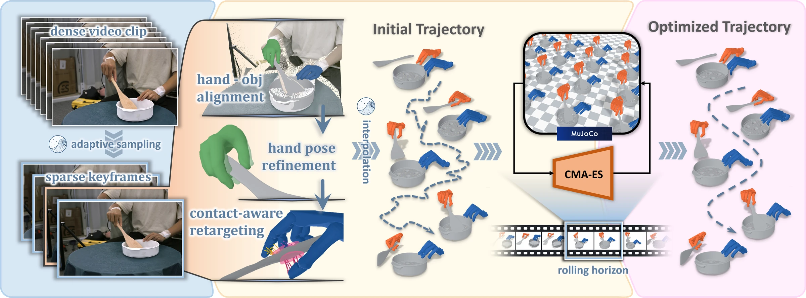
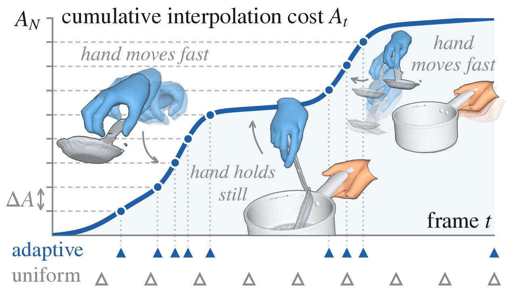
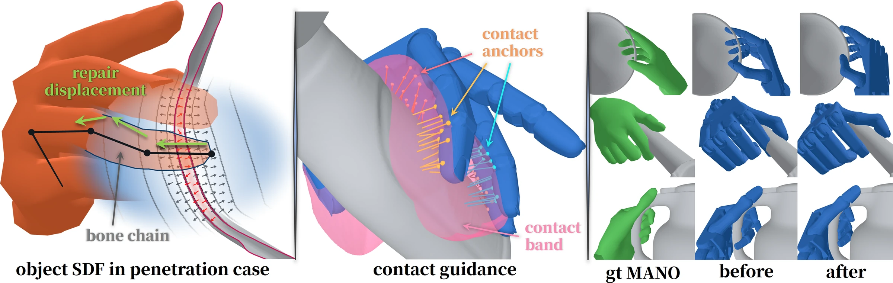

Abstract
Monocular videos of human manipulation provide abundant dexterous demonstrations, yet reconstructing hand-object interaction from a single view and transferring it to robot hands remain difficult, limiting their direct use for robot execution. Prior methods either require task-specific RL training, limiting scalability, or assume clean motion-capture trajectories and thus cannot operate directly on video. We present OmniHOI, a pipeline that turns an RGB video of hand-object interaction into an interaction-faithful trajectory on dexterous hands. The key idea is to enforce physical consistency using the evidence available at each stage: image evidence during reconstruction, contact geometry during retargeting, and dynamics during physics-in-the-loop refinement. Each stage optimizes the corresponding representation directly, correcting errors before they propagate downstream or must be absorbed by a learned policy. Its trajectories also execute on a real bimanual robot across diverse tasks.
Method


Adaptive keyframe sampling
Refining every frame is costly and mostly fits jitter. OmniHOI accumulates the second-order motion of the wrist and the finger joints, and places keyframes at equal increments of this signal: they crowd at reversals and transients and thin out on steady stretches. The frames in between are interpolated.
Hand-object reconstruction
SAM 3 segments hands, objects and table; MoGe-3 estimates intrinsics and per-frame point maps. WiLoR hands are placed by pixel-aligned hand–scene correspondences, and SAM 3D and FoundationPose give each object. Every keyframe is refined by alternating image alignment and contact–penetration optimization.
Contact-aware retargeting
A keypoint-vector solver keeps the finger arrangement, but morphology differences cause contact loss and penetration. Each contacting finger gets a contact region and surface anchors; the smallest pose change first removes link crossings, then penetration, while pulling the anchors to the demonstrated contact.

Physics-in-the-loop refinement
Keyframes are interpolated into a 60 Hz trajectory and replayed in MuJoCo. CMA-ES searches per-keyframe offsets in a rolling horizon, scoring each rollout by object tracking, contact, antagonistic grasp force, penetration and the state at the end of the window.
Real-world deployment
BibTeX
@article{mao2026omnihoi,
title = {OmniHOI: Dexterous Hand-Object Interaction from Monocular Human Video},
author = {Mao, Ting and Shao, Yanming and Wang, Ziheng and Liu, Haoyu and
Wang, Yiqun and Wu, Xuanye and Mu, Yao},
journal = {arXiv preprint arXiv:2610.10855},
year = {2026}
}